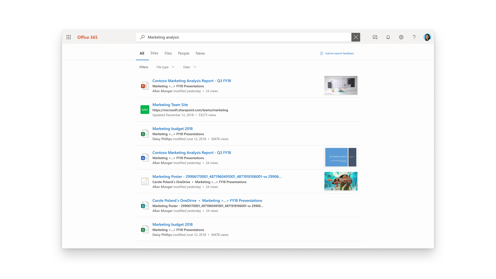
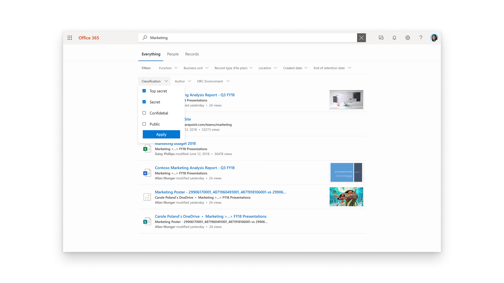

Overview
Microsoft Development Center has worked on SharePoint search from the early days after the acquisition of Fast Search and Transfer. The Microsoft Search project took this to a new chapter aligning the search experience and delivering enterprise search capabilities across the suite.
I worked on the design of the unified Search box experience across the suite, including Office, Word, Excel, PowerPoint, Outlook, OneDrive, and SharePoint, establishing consistent interaction patterns and placement to make search a central entry point. We also expanded the enterprise search experience beyond Microsoft 365, surfacing organizational results directly in Bing search answers and the Windows search bar.
The work included simplifying the Search results page with filters and rich document previews, as well as enabling extensibility through custom connectors and configurable filtering so organizations could surface information from their own systems. The design patterns and search experience continues to be reflected in Microsoft 365 search today.
Design Work

